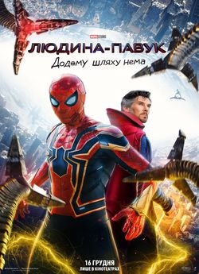
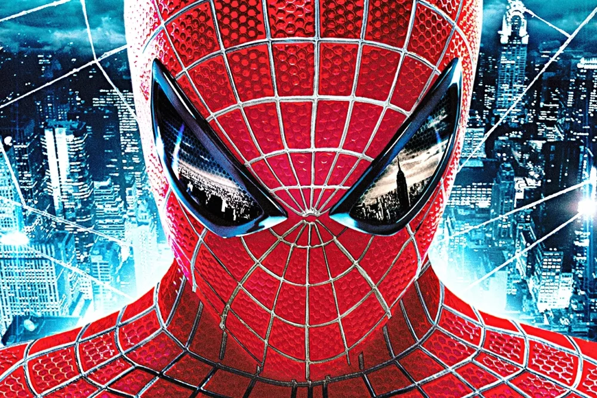
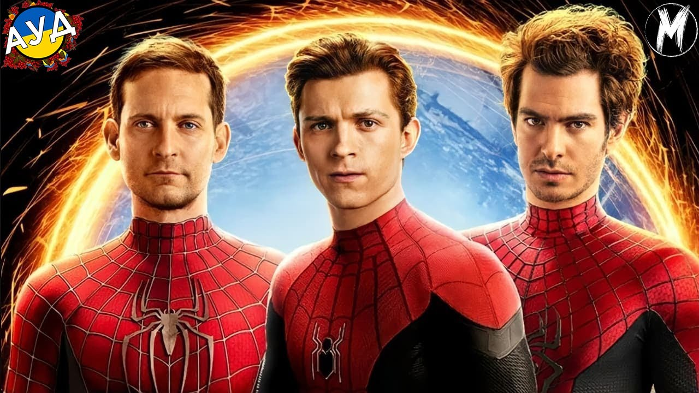

Людина-Павук — один із найвідоміших супергероїв у світі. Його справжнє ім’я — Пітер Паркер. Він живе в Нью-Йорку. Після укусу радіоактивного павука він отримав надлюдські здібності. Він може лазити по стінах, як справжній павук. Також він має неймовірну силу і спритність. Пітер створив спеціальні павутиномети, з яких стріляє павутиною. У нього є «павуче чуття», яке попереджає про небезпеку.

Він втратив свого дядька Бена, що стало поворотним моментом у його житті. Дядько Бен навчив його, що з великою силою приходить велика відповідальність. Пітер працює фотографом для газети «Дейлі Б’юґл». Його бос — Джей Джона Джеймсон — не довіряє Чоловікові-Павуку. Пітер довго приховував свою справжню особистість. Він часто бореться зі злочинцями, ризикуючи власним життям.

Серед його ворогів — Зелений Гоблін, Доктор Восьминіг та Веном. Чоловік-Павук рятував місто безліч разів. Його серце завжди належало Мері Джейн Вотсон. У нього були складні стосунки з Гвен Стейсі. Попри труднощі, він ніколи не здається. Його надихає бажання робити добро. Пітер часто сумнівається в собі, але завжди діє сміливо. Він має добре серце та глибоке почуття справедливості.

Чоловік-Павук є частиною команди Месників. Його костюм — червоно-синій з павучим символом. У деяких версіях у нього є залізний костюм від Тоні Старка. Він стає наставником для молодших героїв. У Всесвіті Marvel існують й інші версії Чоловіка-Павука. Майлз Моралес — один із нових Павуків у мультивсесвіті. Існує також Чоловік-Павук із майбутнього та павучі герої з інших світів.

Його історія надихає мільйони фанатів по всьому світу. Комікси про нього публікує компанія Marvel. Багато фільмів і мультфільмів створено на основі його пригод. Тобі Магвайр, Ендрю Гарфілд і Том Голланд зіграли його в кіно. Його фільми стали блокбастерами. Чоловік-Павук є символом боротьби звичайної людини зі злом. Його історія — це приклад мужності та жертовності.

Він часто стикається з моральними дилемами. Пітер намагається поєднати звичайне життя і геройство. Він не ідеальний, але завжди прагне бути кращим. Чоловік-Павук доводить, що героєм може бути кожен.